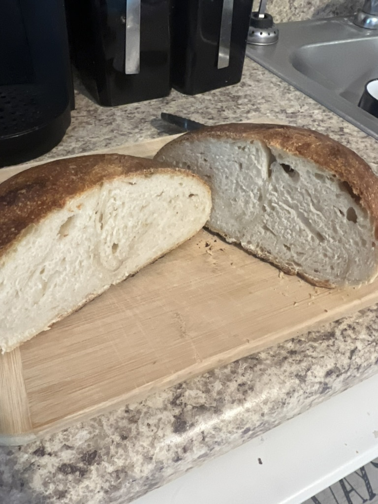
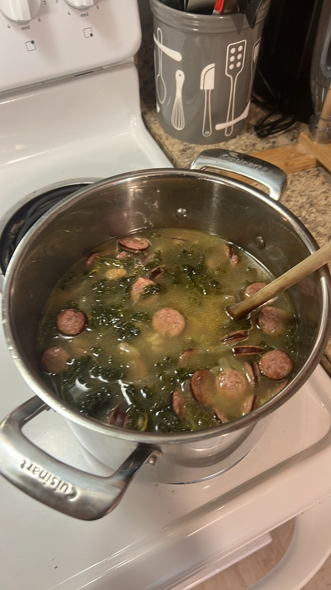

No updates on the job search, just chugging along, doing my 10-12 apps a day, still reaching out to contacts when I see a possibility of a referral, and I have a recruiter that disappeared into the void as well that was keeping an eye out for me.
It's been raining here for what feels like a month straight. Summer is just cruising by so quickly, and my daughter is excited to enter fourth grade. Time really is a mystery, isn't it? Another year, some more gray hair, another missed Super Bowl for the Bills 😂
I made my first loaf of sourdough bread using my homemade starter.

It tasted pretty good, but I royally botched the raising of it, and need to plan the timing better. I did the second (bulk) rise midday and it was about ready to roll when i was going to bed, so I put it in the fridge overnight, and of course the whole doughball collapsed and I ended up with a pretty dense loaf of bread. Nevertheless, I made some kale and kielbasa soup to dip it in, and it was fab.

Cooking is always a nice diversion from the depression that sinks in from things like unemployment. Maybe that is why I am so fat now 😂!
I also downloaded OBS to the mac, and started getting set up to stream some chess again on Twitch. I'm not great but I figure if I am gonna play some blitz chess, I may as well do it in public and maybe talk to myself or chat with some people at the same time.
Yea, so life is going on. I'm hanging in there.